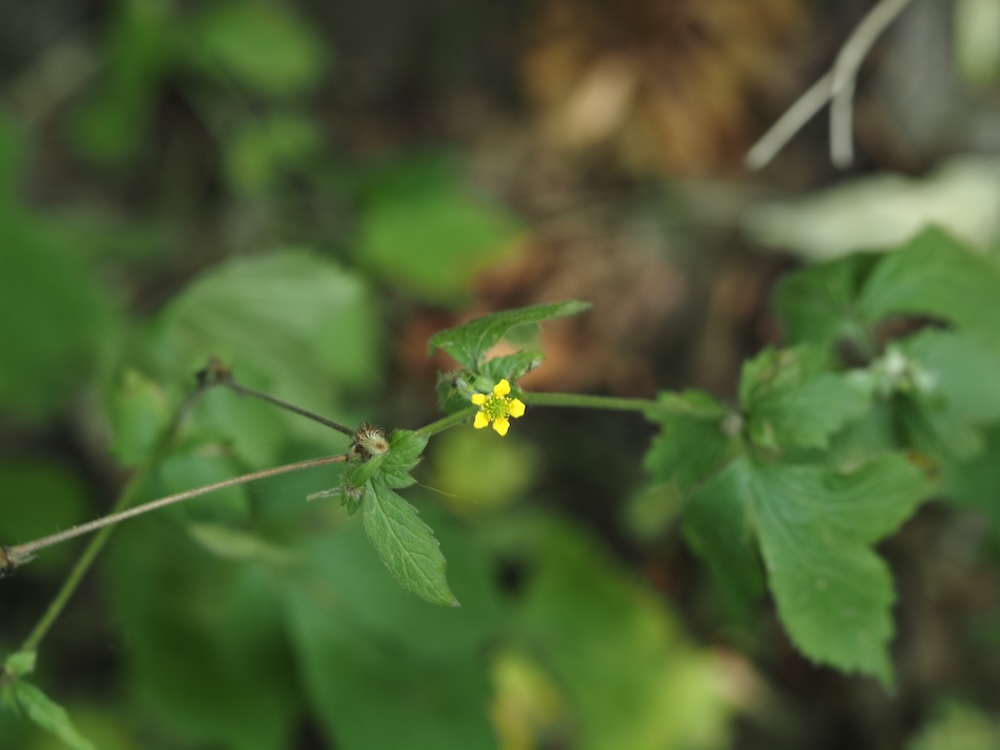

Pflanze des Klosterapothekers
Im Mittelalter war die Nelkenwurz eine der wichtigsten Apotheker-Pflanzen Mitteleuropas. Die Wurzel duftet beim Anschneiden tatsächlich nach Gewürznelken (daher der Name) — und enthält ähnliche Wirkstoffe wie die echte Nelke (Eugenol). Das machte sie zum perfekten Ersatz, denn echte Nelken kamen von weit her und waren teuer. Klosterapotheker zerrieben Nelkenwurz für Wundsalben und Zahnpasten.
Hakensamen-Konstrukteurin
Nach der Blüte bildet die Pflanze erstaunliche Sammelfrüchte: Jede Einzelfrucht trägt am Ende einen kleinen, an der Spitze hakenförmig gebogenen Stiel. Diese Häkchen kleben an Tierfell und Wanderhosen — eine clevere Form von Verbreitung. Wer nach einem Waldspaziergang kleine Klimperhäkchen am Hosenbein findet, hatte Besuch von der Nelkenwurz.